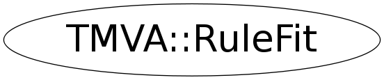

Function Members (Methods)
public:
Data Members
private:
| vector<Double_t> | fEventWeights | original weights of the events - follows fTrainingEvents |
| vector<const TMVA::DecisionTree*> | fForest | the input forest of decision trees |
| TMVA::MsgLogger* | fLogger | message logger |
| const TMVA::MethodBase* | fMethodBase | pointer the method base which initialized this RuleFit instance |
| const TMVA::MethodRuleFit* | fMethodRuleFit | pointer the method which initialized this RuleFit instance |
| Double_t | fNEveEffTrain | reweighted number of events = sum(wi) |
| UInt_t | fNTreeSample | number of events in sub sample = frac*neve |
| TMVA::RuleEnsemble | fRuleEnsemble | the ensemble of rules |
| TMVA::RuleFitParams | fRuleFitParams | fit rule parameters |
| vector<TMVA::Event*> | fTrainingEvents | all training events |
| vector<TMVA::Event*> | fTrainingEventsRndm | idem, but randomly shuffled |
| Bool_t | fVisHistsUseImp | if true, use importance as weight; else coef in vis hists |
| static const Int_t | randSEED | set to 1 for debugging purposes or to zero for random seeds |
Class Charts
{kind=link}
{kind=link}
{kind=link}
{kind=link}

Function documentation
void Initialize(const TMVA::MethodBase* rfbase)
initialize the parameters of the RuleFit method and make rules
Double_t CalcWeightSum(const vector<TMVA::Event*>* events, UInt_t neve = 0)
calculate the sum of weights
void SetMsgType(TMVA::EMsgType t)
set the current message type to that of mlog for this class and all other subtools
void BuildTree(TMVA::DecisionTree* dt)
build the decision tree using fNTreeSample events from fTrainingEventsRndm
void Boost(TMVA::DecisionTree* dt)
Boost the events. The algorithm below is the called AdaBoost. See MethodBDT for details. Actually, this is a more or less copy of MethodBDT::AdaBoost().
void GetRndmSampleEvents(vector<const TMVA::Event*>& evevec, UInt_t nevents)
draw a random subsample of the training events without replacement
void NormVisHists(vector<TH2F*>& hlist)
normalize rule importance hists if all weights are positive, the scale will be 1/maxweight if minimum weight < 0, then the scale will be 1/max(maxweight,abs(minweight))
void FillCorr(TH2F* h2, const TMVA::Rule* rule, Int_t v1, Int_t v2)
fill rule correlation between vx and vy, weighted with either the importance or the coefficient
void FillVisHistCut(const TMVA::Rule* rule, vector<TH2F*>& hlist)
help routine to MakeVisHists() - fills for all variables
void FillVisHistCorr(const TMVA::Rule* rule, vector<TH2F*>& hlist)
help routine to MakeVisHists() - fills for all correlation plots
Bool_t GetCorrVars(TString& title, TString& var1, TString& var2)
get first and second variables from title
void MakeDebugHists()
this will create a histograms intended rather for debugging or for the curious user
void ReshuffleEvents()
{ std::random_shuffle(fTrainingEventsRndm.begin(),fTrainingEventsRndm.end()); }void SetImportanceCut(Double_t minimp = 0)
set minimum importance allowed
{ fRuleEnsemble.SetImportanceCut(minimp); }void SetRuleMinDist(Double_t d)
set minimum rule distance - see RuleEnsemble
{ fRuleEnsemble.SetRuleMinDist(d); }void SetGDNPathSteps(Int_t n = 100)
make visualization histograms
{ fRuleFitParams.SetGDNPathSteps(n); }const Event* GetTrainingEvent(UInt_t i) const
{ return static_cast< const Event *>(fTrainingEvents[i]); }const std::vector< TMVA::Event * > & GetTrainingEvents() const
const Event* GetTrainingEvent(UInt_t i, UInt_t isub) const { return &(fTrainingEvents[fSubsampleEvents[isub]])[i]; }
{ return fTrainingEvents; }